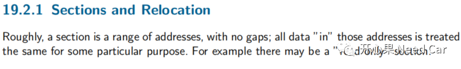
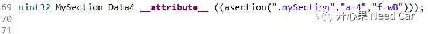
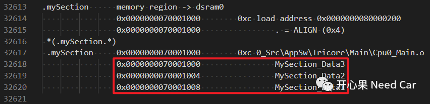
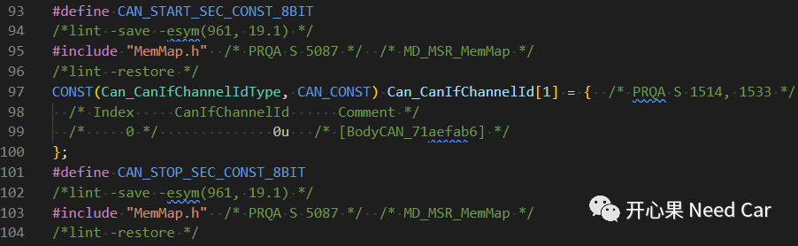

开心果 Need Car · 2022-11-17T07:07:00+08:00 · 微信原文
软件开发中，不管是底层软件开发还是上层软件开发，多少都会与段（Section）产生交集。什么是Section？如何在链接文件中自定义Section?Autosar中如何分配Section？本文，带着这些疑惑，我们聊一聊。
提示：基于HighTec编译器对应的链接文件（*.lsl）讨论
1、什么是Section？
HighTec的用户手册中，对于"Section"的解释如下所示：

意思是说：Section是一段没有间隔（gaps）的连续地址空间。这段地址具有特定的目的，eg：将其设定"只读"。
实际的工程中，我们会将函数或者变量放入指定的Section，或者说自定义的Section。这又是如何操作的呢？
2、如何在链接文件中自定义Sections呢？
<objects>
B：uninitialized，未初始化
uint32 MySection_Data1 = 0x00;uint16 MySection_Data2 = 0x01;uint8 MySection_Data3 = 0x02;
2、asection方式
语法规则：
__attribute__ ((asection("<name>", "a=<align>", "f=<flags>")))属性部分和方法1等同。
示例：

SECTIONS{".mySection" 0x70001000:{. = ALIGN(4) ;//4字节对齐，这一行很有必要*(.mySection.*)} > dsram0}

阅读Autosar代码的时候，大家应该会注意到如下的特点：
......
MemMap.h文件通过定义的Xx_START__Xx和Xx_STOP__Xx标识，将Object分配到指定的Section。这种写法很优秀，值得借鉴。示意代码如下所示：

往期精彩回顾